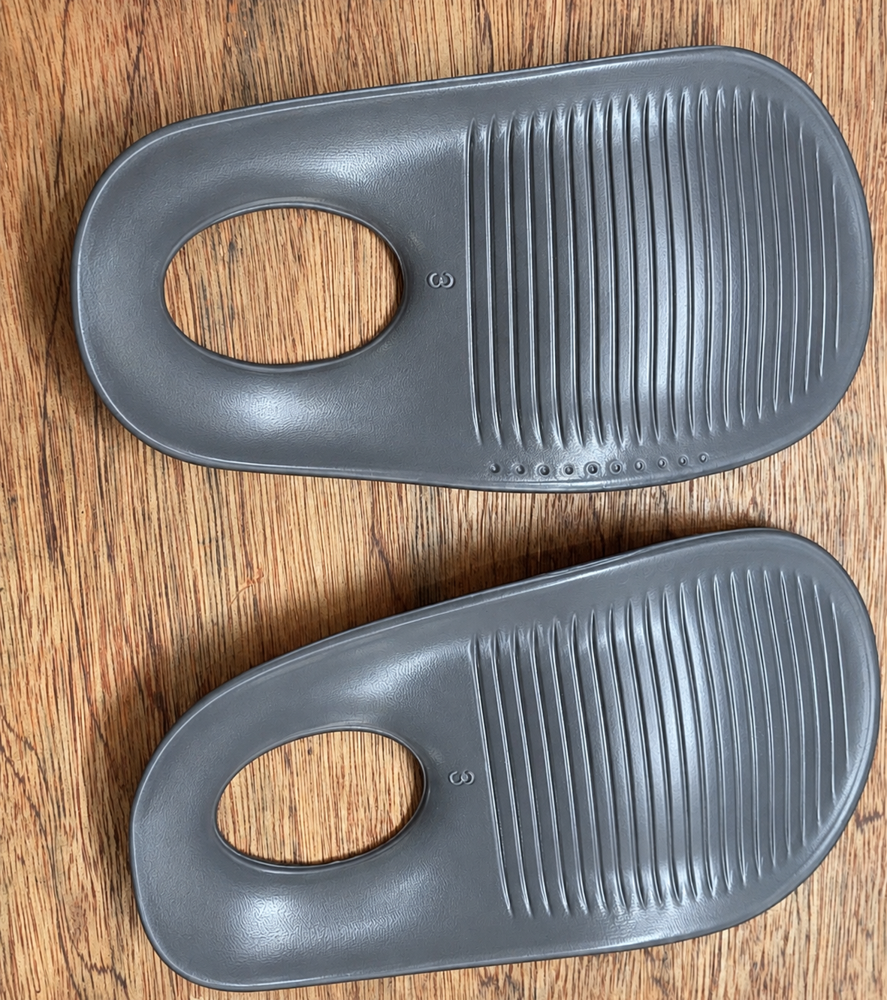

RhaRa Shoe
라라슈
NEW · RS
라라슈 쿼드그립
아치가득 인솔

01
아치 라인을
따라 가득
발 아치 곡선을 따라
빈틈을 채우는 형태
ARCH CONTOUR
HEEL
TOE
02
뒤꿈치를
감싸는 컵
가운데를 비운 링 구조로
뒤꿈치를 감싸 안습니다
HEEL CUP · RING
03
우드칩
배합 소재
목공소 자투리 우드칩을
새활용해 배합했습니다
UPCYCLED WOOD-CHIP BLEND
라라슈 쿼드그립
아치가득 인솔
2026. 11. 11 OPEN
RhaRa Shoe · 라라슈